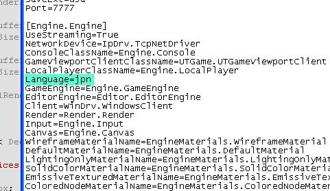

UDN
Search public documentation:
LocalizationReferenceCH
English Translation
日本語訳
한국어
Interested in the Unreal Engine?
Visit the Unreal Technology site.
Looking for jobs and company info?
Check out the Epic games site.
Questions about support via UDN?
Contact the UDN Staff
日本語訳
한국어
Interested in the Unreal Engine?
Visit the Unreal Technology site.
Looking for jobs and company info?
Check out the Epic games site.
Questions about support via UDN?
Contact the UDN Staff
UE3主页 > UnrealScript > 本地化参考指南
本地化参考指南
概述
本地化文本
本地化文本文件
请参照本地化文本文件页面获得关于文件格式及如何使用字符串和二进制数据的更多信息。目录路径
引擎在可配置的路径中查找本地化文本文件(Core.System.LocalizationPaths, 默认为 "Engine\Localization")。当本地化一个资源时，它首先在当前设定的语言的本地化文件中查找。如果没有找到那个资源的本地化版本，那么再从国际的(英语)本地化文件(.INT)中查找。导出
除了使用在UnrealEd中的 Full Loc Export(完全导出本地化文件)... 外，也可以使用命令开关exportloc 。
exportloc 命令开关将把UnrealScript包中的本地化字符串导出为一个本地化文本文件：
gamename.exe exportloc
设置激活的语言
通过在您项目的Engine 配置文件中设置Language变量为和本地化文件目录相对应的特定语言可以改变所使用的语言。 比如，这是如何把引擎语言设为日语的过程：[Engine.SeekFree] ... Language=JPN ...

测试
要想测试本地化，创建一个假的称为XXX的语言。将所有的字符用字母X来替换。这将会很容易地发现丢失的本地化文本。翻译过程
本地化人员处理的是本地化文件(文本)而不是内容(二进制)。请谨慎地接受外部团队重新保存的内容。谁也不知道这些内容包是否应用了其它的属性、黑客等等。 当创建了新的需要本地化的对象时，简单地在编辑器中执行 Full Loc Export(完全导出本地化文件)... 命令即可。这将不会破坏已存在的本地化数据，因为这些数据在导出时已经在内存中。 对于战争机器来说，我们的工作流程是提供每个国际通用的(英文)本地化文本(.INT)和针对该文更新差异(diff)，从而可以向本地化的工作人员显示自从上一次更新后又创建(重新导入)了哪些新的本地化对象或对象属性；他们将负责把这些新的字符串更新到他们的文件的语言版本中。 可替换地，如果某人不太信任本地化团队处理更新差异(diffs)的能力，他可以通过在打开编辑器并导出前简单地设置引擎的语言为目标语言，从而为每种语言分别地重新导出本地化文本文件。 通过这种方式，您可以直接地仅发送INT文件给翻译人员。对于战争机器，我们为本地化团队提供了本地化文本及特定编译版本，以便在游戏中测试内容。由于上述原因，我们仅接受对本地化文件的改变。 我们没有进行额外的处理来把本地化文件放到更加方便编辑的软件中，比如Excel。我们让本地化团队将数据变成他们需要的任何内部格式。本地化内容
贴图
注意：引擎在默认情况下是不支持动态载入本地化贴图的，因为到已烘焙的贴图文件的贴图偏移量存储在免寻道的包中。音频
音频本地化文件需要一些设置。最简单的(推荐的)过程是分离所有的Sound cue，并把它们放入到'MyGame\Content\Sounds'内的包中，然后把所有的本地化音频波形文件放入到使用那三个代表语言编码的字母命名的子文件夹中。 这将产生类似于以下的内容 -
MyGame\
Content\
Sounds\
MainCharacterVO_cue.upk
EnemyVO_cue.upk
INT\
MainCharacterVO.upk
EnemyVO.upk
JPN\
MainCharacterVO_JPN.upk
EnemyVO_JPN.upk
当加载本地化声效时，它将加载针对选中语言的音效。这意味着只要编辑一次，就可以把任何生效改变统一地应用到所有语言上。
如果一个Sound cue引用的声音波形所在的子文件夹命名的三个字母和已知的语言编码匹配或者音效有字幕，那么就认为这个音效已经被本地化了。如果您使用上面的文件夹布局，那么一切都将会按照您期望的那样本地化。请参照以下的案例学习获得更加具体的示例。
视频
某些视频有对应的.txt文件，该文件包含了‘字幕‘本地化文本文件中的关键帧和它们出现的时间。.txt文件类似于对白字幕，它们和正在播放的音频没有任何关系。这信息必须在适当的时机手动地进行制作(第一行是每秒钟内更新的次数，其它行用于决定那行 开始/停止 次数)。 对于视频中的音频，制作一个 Bink 视频并把所有的语言混入到视频中作为一个声道集合。我们所做的是向本地化音频重新映射前左方、前中和前右方的音频，然后让所有语言具有相同的后方音频和超低音。 函数FBinkMovieAudio::SetSoundTracks() 将返回和扬声器相对应的一系列通道，因此 -
| INT | FRA | ITA | |
| Front Left(前左方) | 0 | 6 | 9 |
| Front Right(前右方) | 1 | 7 | 10 |
| Front Center(前中方) | 2 | 8 | 11 |
| Subwoofer(超低音) | 3 | 3 | 3 |
| Rear Left(后左方) | 4 | 4 | 4 |
| Rear Right(后右方) | 5 | 5 | 5 |
本地化虚幻编辑器
案例学习: 战争机器的本地化
- Dialog(对话) -- 是在唯一的脚本情境中发出的多行对话的声音。
- Chatter -- 由玩家发出的作为非脚本化游戏性情境的结果的多行对话。比如，一次堵塞的射击带来的沮丧、当打倒一个敌人的胜利等。
- Efforts --不包含讲话的游戏性声音 --呼噜声、呼喊声、痛苦的呻吟声等等。
语言编码
| INT | 美国英语 (不是世界上其他地方的英语) |
| JPN | 日语(没有TTS支持) |
| DEU | 德语 |
| FRA | 欧洲法语(而不是加拿大法语) |
| ESM | 拉丁美洲西班牙语(现代西班牙语?) (没有.NET、语音识别支持) |
| ESN | 欧洲西班牙语 (伊比利亚西班牙语? 古代西班牙语? 传统西班牙语?) |
| ITA | 意大利语 |
| KOR | 韩语(没有TTS支持) |
| CHT | 繁体中文(没有语音识别或TTS支持) |
| RUS | 俄语(没有语音识别或TTS支持) |
| POL | 波兰语(没有语音识别或TTS支持) |
| HUN | 匈牙利语(没有语音识别或TTS支持) |
| CZE | 捷克语(没有语音识别或TTS支持) |
| SLO | 斯洛伐克语(没有语音识别或TTS支持) |